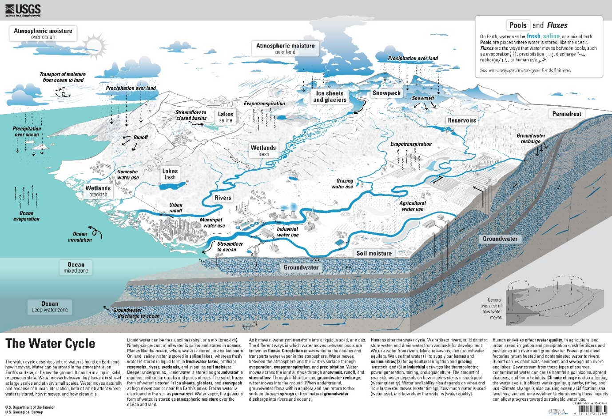
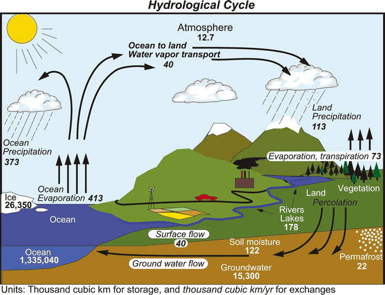
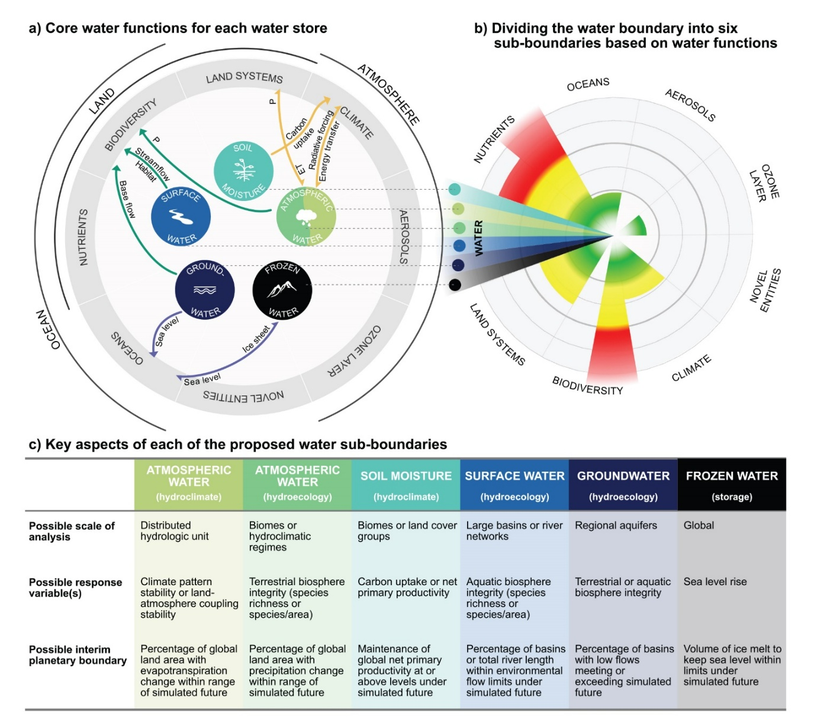
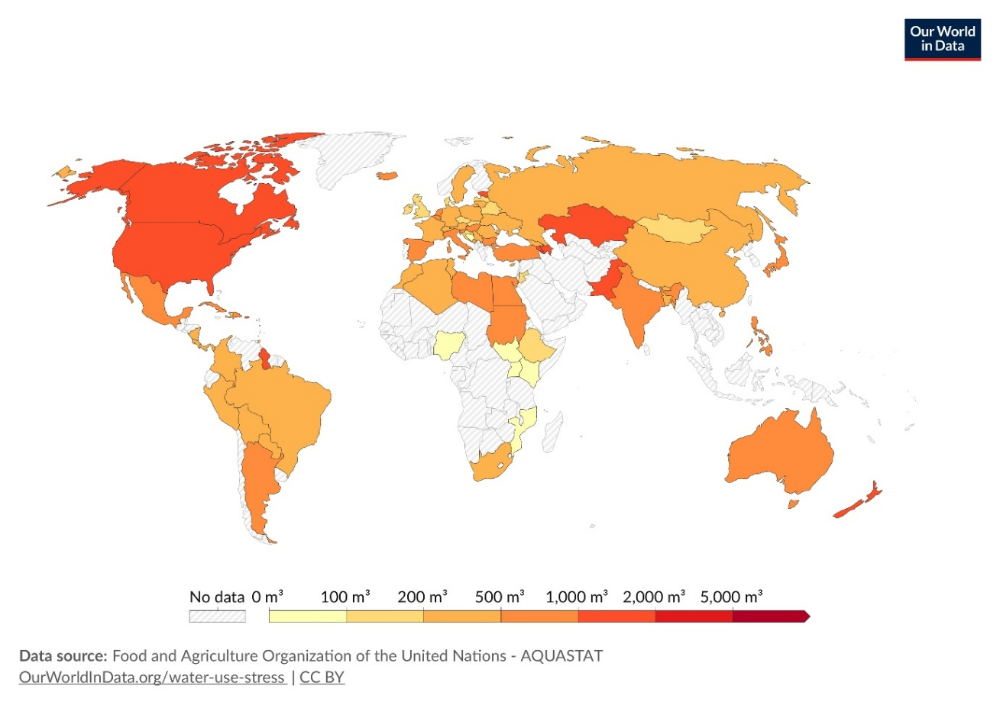
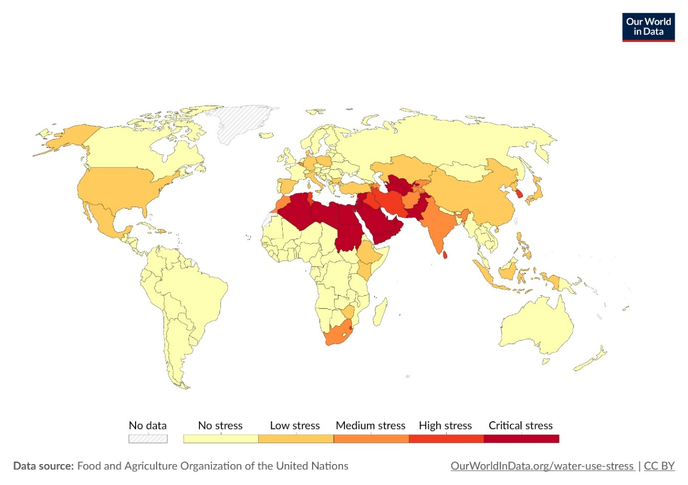
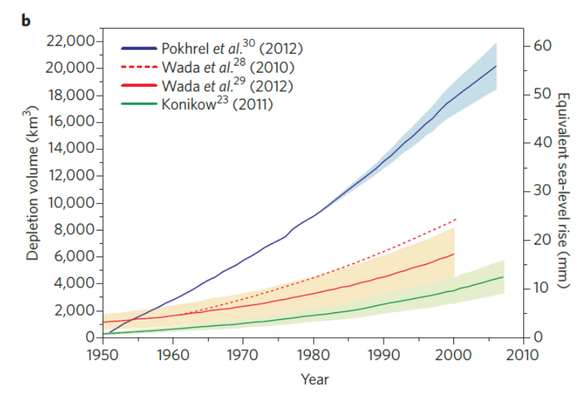
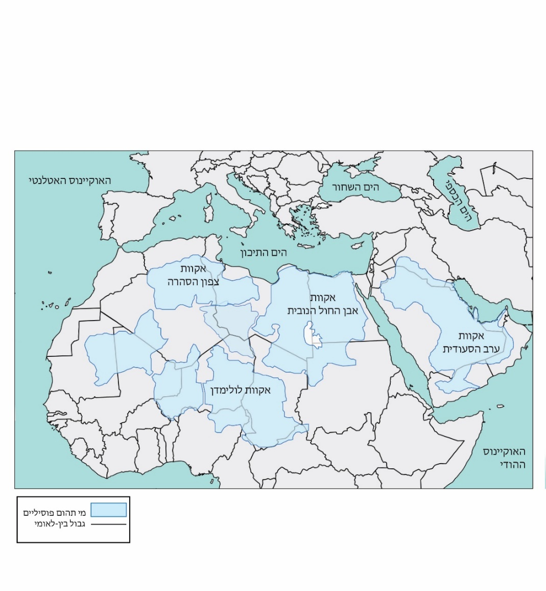
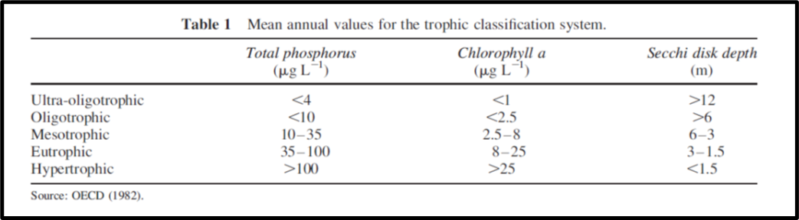
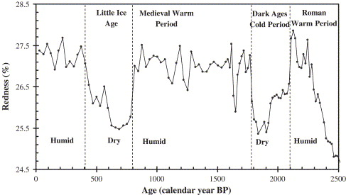
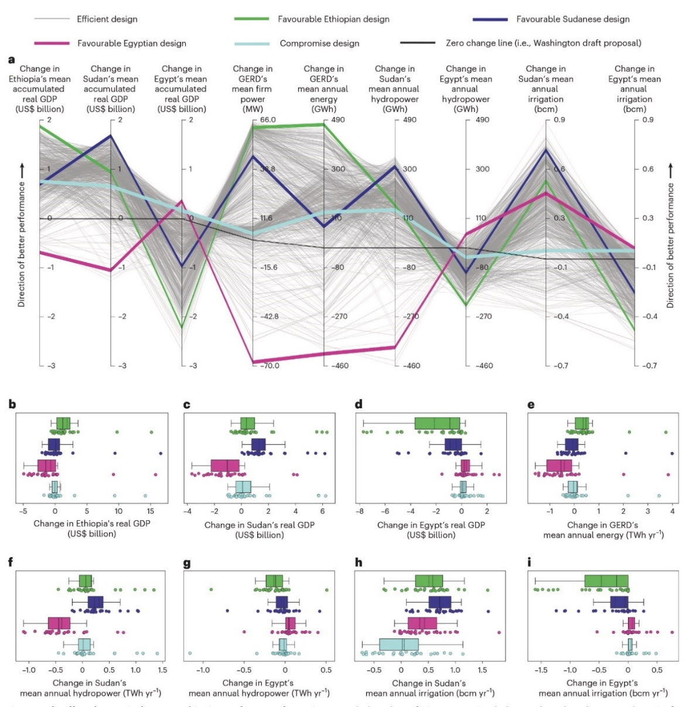

”With them the seed of Wisdom did I sow,
And with mine own hand wrought to make it grow;
And this was all the Harvest that I reap’d –
I came like Water and like Wind I go.“
Omar Khayyam, Les Rubaïyat
9. פגיעה במקורות ובאיכות מים מתוקים#
מים זורמים, זמינים ונקיים הם תנאי הכרחי לקיום חיים, וללא מים בכמות ואיכות מספקת החברה האנושית אינה יכולה להתקיים. כבר מאות שנים נעשה מחקר מדעי המתמקד בתכונות מים בכל מצבי הצבירה שלהם, במנגנוני זרימת מים, בתהליכים ביולוגיים וכימיים המתרחשים בהם, וכן במאגרי מים וניהול משאבי מים. חקר המים מתמקד הן במים שעל פני השטח והן במי תהום. היבטים פיזיקליים, כימיים וביולוגים הנוגעים לאוקיינוסים ולסביבה הימית יידונו בהרחבה בפרק 10. מתוך אלפי הספרים והמאמרים בתחום בחרתי לציין כמה חיבורי מפתח העוסקים במחזור המים בטבע[1] (כולל השפעת האנושות)[2] ובגופי מים שונים,[3] וכן ספרים הדנים בהיבטים כימיים,[4] פיזיקליים,[5] וביולוגיים[6] של מים. בעברית קיים ספר העוסק בצורה מקיפה בהיבטים רבים ומגוונים של נושא המים בדגש ישראלי.[7] בפרק זה נסקור מספר היבטים של מחזור המים בטבע (איור 9.1), ובעיקר את הלחצים שהחברה האנושית מפעילה על מקורות המים. נדון במאגרי המים והשטפים העיקריים (9.2-9.1), נתאר את היקף ההשפעה של בני האדם על מחזור ואיכות המים (9.3), ואז נסקור את השפעת בני האדם על מי תהום (9.4), מי נהרות ונחלים (9.5) ומי אגמים (9.6). לאחר מכן, נתאר את סוגי המזהמים השונים ונציג את שיטות טיפול במים (9.7) ונסיים בסקירה של מספר מאבקים פוליטיים וצבאיים על מקורות מים בפינות שונות של כדור הארץ (9.8). לאורך הפרק נזכיר את ההשפעה של שינוי אקלים, ריבוי האוכלוסייה ועלייה ברמת חיים, חקלאות, עיור על זמינות ואיכות מים. נתייחס לגופי מים כמערכות אקולוגיות**,** ונדון בסוגים שונים של מים (מים ירוקים,[8] מים כחולים,[9] מים אפורים[10]).
9.1 מאגרי המים העיקריים#
מעל תשעים ושבעה אחוז מהמים בפני השטח של כדור הארץ נמצאים באוקיינוסים ובימים המחוברים אליהם ואינם חלק מהדיון בפרק זה (למעט נושא ההתפלה). כיפות הקרח של אנטארקטיקה וגרינלנד מהוות את המאגר השני בגודלו, המכיל מעל שני אחוז מכלל המים בפני השטח של כדור הארץ. כלומר, מאגרי המים בהם מתמקד הפרק הנוכחי מהווים כשליש אחוז מכלל המים על פני השטח של כדור הארץ (איור 9.2). למרות זאת, מדובר בנפח מים גדול ביותר, הנמדד על פי רוב ביחידות של ק“מ מעוקב או מטר מעוקב (קילומטר מעוקב מכיל מיליארד מטר מעוקב). מי התהום הם המאגר הגדול ביותר, המכיל כ-15 מיליון ק“מ מעוקב עם זמן שהות[11] אופייני של שנים עד עשרות אלפי שנה ובמקרים קיצוניים של מי תהום עמוקים, אף מאות אלפי שנים;[12] אגמים ומאגרי מים מתוקים ומליחים מכילים כ-180 אלף ק“מ מעוקב עם זמן שהות ממוצע של עשרות שנים; האטמוספרה מכילה כ-13 אלף ק“מ מעוקב של מים (זמן שהות של כשבוע); ונהרות מכילים כ-1,200 ק“מ מעוקב של מים, כעשירית מכמות המים באטמוספרה, עם זמן שהות של פחות משבועיים.
{kind=link}

Fig. 76 איור 9.1: העמוד הבא: תיאור סכמתי של מחזור המים בכדור הארץ. המקרא בתחתית האיור (באנגלית) מפרט רבים מהמושגים המופיעים בפרק.#
מקור – Corson-Dosch, H. R. et al. (2023) https://doi.org/10.3133/gip221 ; Reprinted with permission.
9.2 השטפים העיקריים של מים#
השטפים העיקריים של מים בכדור הארץ הם משקעים, אידוי וזרימת מים והם מפורטים באיור 9.2.[13] משקעים (גשם ושלג) מעבירים מן האטמוספרה כ-113 אלף ק“מ מעוקב מים בשנה לפני השטח של היבשות וכ-373 אלף ק“מ מעוקב בשנה לאוקיינוסים. כ-413 אלף ק“מ מעוקב מים בשנה חוזרים לאטמוספרה על ידי אידוי מהאוקיינוסים וכ-73 אלף ק“מ מעוקב בשנה מהיבשות. תרומת היבשות כוללת אידוי מגופי מים ומקרקעות ודיות (טרנספירציה - transpiration)[14] מצמחים. כלומר, באוקיינוסים יש כ-40 אלף ק“מ מעוקב יותר אידוי מאשר משקעים, ועודפי האדים מוסעים באטמוספרה אל מעל היבשות והופכים שם למשקעים הנוספים למשקעים שנוצרים מהלחות שמקורה בתהליכי האידוי והטרנספירציה[15] ביבשה (כ-73 אלף ק“מ מעוקב בשנה). על מנת לסגור את המאזן, יש מעבר מים מן היבשות לאוקיינוסים. מעבר זה נשלט ברובו (מעל-98%) על ידי זרימת כ-40 אלף ק“מ מעוקב מים בשנה בנהרות. זרימות של מי תהום לים תורמות כאחוז מנפח המים וכ-2% משטף הנוטריינטים, אולם יש לה השפעה גדולה יותר באזורי חוף מסוימים.[16]
את המים שעל היבשות נוהגים לחלק למים ירוקים, האצורים בקרקע ובאזור הבלתי רווי (כ-122 אלף ק“מ מעוקב) ובצמחים, והם חוזרים לאטמוספרה דרך אידוי וטרנספירציה; ומים כחולים הנמצאים במאגרי מי תהום ומי שטח, שפורטו לעיל והזורמים ברובם אל הים (אם כי חלק גם מתאדה). בנוסף, פעילות האדם ושימוש במי תהום, מי אגמים ומי נהרות מייצר סוג חדש של מים שלא היה קיים בטבע, מים אפורים (מי קולחים) שכמותם באיור 9.2 מגולמת בתוך השטפים של מים כחולים וירוקים.
{kind=link}

Fig. 77 איור 9.2: מאגרי ושטפי מים עיקריים בכדור הארץ.#
מקור – Trenberth, K. E. et al. (2007) https://journals.ametsoc.org/view/journals/hydr/8/4/jhm600_1.xml. © American Meteorological Society. Reprinted with permission.
9.3 השפעת האנושות על מחזור ואיכות המים#
לבני האדם יש השפעה רבה, ההולכת וגדלה על מחזור המים המתבטאת במספר אופנים:[17] (1) הטיית כמויות מים גדולות לצרכיהם וצריכת מים ישירה של כ-4,000 ק“מ מעוקב בשנה, או כ-10% מכלל המים המובלים בנהרות. כ-70% מהצריכה האנושית מופנית לחקלאות, 17% לתעשייה כולל קירור תחנות כוח באזורים מרוחקים מהים, בעוד משקי הבית צורכים כ-12%.[18] בין השנים 2000 ו-2020 עלתה צריכת המים מ-3,500 ק“מ ל-4,000 ק“מ מעוקב, והיא צפויה להיות מעל 5,000 ק“מ מעוקב בשנת 2050.[19] (2) שינוי שטפים למשל בעקבות ההתחממות הגלובלית המשפיעה על משקעים ואידוי,[20] וכן שינוי גודלם של מאגרי מים ותנועת מים על היבשות באמצעות סכרים. (3) פגיעה נרחבת באיכות המים דרך שחרור אלפי כימיקלים, שחלקם רעילים וחלקם מהווים נוטריינטים המשבשים את התפקוד של הביוטה החיה במים. (4) בהרבה ארצות הדרישה הגוברת למים יוצרת תחרות קשה על משאבי מים בין המגזר החקלאי לבין מרכזים עירוניים.[21] ישנן ארצות רבות בהן מחסור במים באיכות טובה מהווה כבר היום בעיה אקוטית,[22] מה שיוצר לעיתים קונפליקטים בין מדינות (ראו הדיון על מצרים ואתיופיה בהמשך הפרק). אחת המדינות בהן מחסור במים הגיע לאחרונה לממדים קיצוניים היא אירן. מחסור המים באירן התבטא הן בירידה דרמטית של מפלס מי התהום והן בהעלמות כמעט מוחלטת של אגמים, מאגרים ונהרות (e.g., the Karum River)[23]. לדעת מחברי המאמר, המשבר הגיע לממדים של משבר לאומי (Civilizational Drought)[24] והוא עלול ליצור משבר חברתי חריף.
לצד בעיית הצריכה ישנה, כאמור, גם בעיית זיהום של מאגרי מים, כאשר ברור שעל מנת לטפל במפגעים בצורה נכונה, יש לטפל במקורות הזיהום (עליהם נרחיב בהמשך הפרק). מחקר מקיף שפורסם בשנת 2010 הראה כי כ-80% מאוכלוסיית העולם סובלים מפגיעה כזאת או אחרת במקורות המים המשמשים אותם.[25] המחברים הצביעו על כך שבארצות עשירות קיימים מנגנונים לטיפול במפגעים במקורות מים הנצרכים על ידי בני האדם, אולם לא במקורות מים הנצרכים על ידי מערכות אקולוגיות, ובארצות עניות לעומת זאת, גם בני האדם צורכים מים מזוהמים.[26] דוח של הקרן האירופאית לסביבה (EEA) מאשש את הטענות הללו ומראה שבאירופה כשני שליש ממאגרי מי השטח (אגמים ונהרות) סובלים מזיהום ומפגיעה במרקם האקולוגי שלהם.[27] מאמר שהתפרסם ב-2023 צופה שמאגרי מי שטח באפריקה שמדרום לסהרה יעשו המזוהמים ביותר עד סוף המאה העשרים ואחת.[28] לאחרונה התפרסם מאמר נוסף הדן בכל ההשפעות הללו על מאגרי המים בעולם ובהשפעה ההדדית שבין מחזור המים ותופעות סביבתיות אחרות (למשל, מים באטמוספרה ושינויי אקלים).[29] המאמר גם קושר את מחזור המים על כל מרכיביו לתפיסה הכוללת של גבולות פלנטריים שהוגדרו בפרק המבוא (Planetary Boundaries), וכפי שמופיע באיור 9.3. המחברים מנסים להגדיר נקודות אל-חזור (Tipping elements) כמרכיבים במחזור המים שיש להם את הפוטנציאל לעבור שינויים מהותיים בקנה מידה של יבשות, בעקבות הפרעות קטנות יחסית. כלומר, אלמנטים בהם שינוי כמותי יכול להפוך לשינוי איכותי תוך זמן קצר יחסית (ראו הדיון בנקודות אל-חזור בפרק 6).
למרות הכתוב לעיל ובדומה לתחומים סביבתיים אחרים, גם בתחום המים ניטש ויכוח בין חוקרים לגבי עוצמת ההשפעה של החברה האנושית על מחזור המים הגלובלי והדרכים הנכונות לאפיין אותה.[30] יש הטוענים שהמצב גרוע ביותר - פשיטת רגל של מקורות המים.[31] אחרים חושבים שהמצב הולך ונעשה גרוע, אבל לא משתמשים במונח של פשיטת רגל, ומראים שמספר תהליכים הגבירו את מחסור המים בעשורים האחרונים.[32] למשל, ההתחממות הגלובלית גרמה לעליה בשכיחות אירועי בצורת ובעיקר ארועי בצורת תקופתיים (flash droughts),[33] השפיעה על התנהגות אגני ניקוז של נהרות,[34] וכנראה גרמה לירידה משמעותית במפלס מי השטח ומי התהום בעולם בשנים 2016-2014, ירידה שלא השתקמה לפחות עד 2023.[35] אולם, יש גם כאלה הגורסים שהמגמה בשכיחות אירועי בצורת איננה חד משמעית ושפרמטרים אחרים, כמו למשל כמות שלג על הקרקע, השתנו באופן שונה ביבשות ובאזורים שונים.[36] יש אף שגורסים כי בעקבות התחממות גלובלית ”The dry gets dryer and the wet gets wetter“[37] ויש שטוענים שהתמונה סבוכה יותר,[38] מה שאומר שאזורים שונים יגיבו באופן שונה להתחממות גלובלית מבחינת משאבי המים שלהם.
בהקשר זה עולה השאלה כיצד מגדירים בצורת. ברור שמחסור זמני במים אין משמעותו בצורת, משום שמחסור במים יכול לנבוע גם מעודף ביקוש. לכן, נעשים היום מאמצים לאפיין אובייקטיבית ארוע בצורת.[39] באופן כללי, בצורת מוגדרת כמחסור במשקעים הנמשך זמן ממושך ושיש לו השפעה שלילית משמעותית על מקורות מים, מערכות אקולוגיות, ומדדים של קיימות מבחינה חברתית וכלכלית, כמו הצורך בשאיבת יתר של מי תהום. מה שלא נתון בספק היא העובדה שיש כיום שונות גדולה מאד בין מדינות מבחינת ביטחון אספקת מים,[40] הן מההיבט של זמינות מים לאוכלוסייה (איור 9.4), והן מבחינת אחוז המים הזמינים שנצרכים בפועל (איור 9.5). למשל, בעשור האחרון היו דיווחים על מחסור אקוטי במים גם בערים מערביות, למשל בקייפטאון בשנת 2018,[41] ובקליפורניה (בייחוד בלוס אנג’לס) בשנת 2015.[42] זאת למרות שקייפטאון נחשבת לעיר ירוקה במיוחד שניהלה במשך שנים את משק המים שלה בצורה שזכתה לשבחים, וקליפורניה היא אחת המדינות עם המודעות הסביבתית המתקדמת ביותר.
לבני האדם יש גם השפעה ניכרת על מחזור הפחמן בגופי מים, מה שכמובן משפיע על פליטת גזי חממה.[43] כמחצית מהפחמן האצור בגופי מים ביבשות (בעיקר אגמים, נהרות וביצות) נפלט לאטמוספרה, קצת פחות ממחצית מועברת לאוקיאנוסים, ורק חלק קטן (כעשירית) מוטמנת בקרקעית של גופי המים. כלומר, גופי המים ביבשות מהווים מקור לפליטות של גזי חממה (פד“ח, מתאן וחנקן דו-חמצני) אל האטמוספרה.[44] אמנם מדובר בכמויות קטנות יחסית לפליטות הישירות של פד“ח משריפת דלקים פוסיליים (כ-35 גיגה-טון בשנה, ראו פרק 5), אולם עדין מדובר בכמויות גדולות מאד. קיימת אי וודאות לגבי גודל השטפים, אולם ברור שיש לנהל את משק המים באופן כזה שאובדן פחמן אל האטמוספרה, בעיקר כפד“ח ומתאן, יפחת ככל שניתן. יש מחלוקת בין החוקרים לגבי מגמות הפליטה. מצד אחד ישנם מחקרים הטוענים כי כמות הפחמן הנקלטת מידי שנה בגופי מים יבשתיים גדלה ב-25% מאז 1800 ועד 2019, וב-2010 הגיעה לשני גיגה-טון בשנה בערך.[45] זאת כאשר כ-65% מהפחמן הנקלט היה פחמן אי-אורגני מומס (DIC) והשאר פחמן אורגני חלקיקי (POC) ופחמן אורגני מומס (DOC), באחוזים שווים בערך. מצד שני, יש הערכות כי כיום יש עליה בפליטות מתאן ממי שטח עקב התרבות מקורות מים הסובלים מאנוקסיה (מחסור בחמצן) בגלל עליה בריכוז חומר אורגני המומס במים.[46]
חקר מחזור המים העולמי והשפעת האדם עליו (איור 9.3) התקדם משמעותית בעשורים האחרונים בזכות השיפור הניכר בשיטות חישה מרחוק ויכולות חישוב ומידול.[47] כך למשל, במאמר של Vorosmarty ושותפיו שפורסם ב-2015 נכתב שגורמים גלובליים (שינויי אקלים והתחממות גלובלית)[48] משפיעים במידה לא מבוטלת על תהליכים מקומיים, ומצד שני, לעיתים בעיות מקומיות משפיעות על ניהול משאבי מים וההגנה עליהם בקנה מידה עולמי.[49] למשל, פרויקטים של וויסות זרימה בנהרות באמצעות סכרים ומאגרים משפיעים על הובלת סדימנטים[50] לים וכתוצאה מכך על יציבות קווי החוף.[51] כמו כן, מפעלי מים רחבי היקף כפי שנעשה באגנים של נהרות האמזונס והקונגו, הנהרות עם שפיעת המים הגדולה בעולם, עלולים לפגוע באופן בלתי הפיך במערכות האקולוגיות שלהן ואפילו של האוקיינוסים, ובעקבות זאת ליצור שינוים גלובליים במחזור הפחמן.
{kind=link}

Fig. 78 איור 9.3: (a) תפקידי המים בחמשת המאגרים העיקריים (לא כולל מי ים), שימו לב שמים אטמוספריים מחולקים לשני תת-מאגרים. (b) הגבולות הפלנטריים של מים בהתאם למאגרי ותפקידי המים. (c) היבטים עיקריים של כל אחד ממאגרי המים.#
מקור – Gleeson et al. (2020) https://doi.org/10.1029/2019WR024957; ©2020. American Geophysical Union. All Rights Reserved. Reprinted with permission.
{kind=link}

Fig. 79 איור 9.4: סך כל המים (מטר מעוקב) הנצרכים (עבור חקלאות, תעשייה, שימוש ביתי) לאדם בארצות שונות בשנת 2015.#
מקור – Our World in Data, https://ourworldindata.org/water-use-stress ; Reprinted with permission.
{kind=link}

Fig. 80 איור 9.5: עקת המים הזמינים (water stress) בארצות שונות.#
מקור – Our World in Data, https://ourworldindata.org/water-use-stress ; Reprinted with permission.
9.4 מי תהום#
מי תהום הם מאגר המים השפירים הגדול ביותר (ראו לעיל), והם מספקים כשליש מצריכת המים של האנושות.[52] מי תהום זמינים נמצאים בתת הקרקע בשכבות של סלעים נקבוביים (פורוזיים) בעלי יכולת הולכת מים, המונחים מעל ולעיתים גם מתחת לסלעים אטומים יותר,[53] כלומר סלעים עם מוליכות מים נמוכה בהרבה. מאגר של מי תהום נקרא אקווה (אקוויפר - aquifer). גודלה של אקווה נקבע על סמך שטח ההשתרעות שלה ועובייה. ישנן אקוות שגודלן כמה קילומטרים רבועים והן מכילות כמויות מים קטנות יחסית, וישנן אקוות ששטחן נאמד בעשרות אלפי קמ“ר, ועוביין יכול להגיע למאות מטרים. מי תהום הם, כאמור, מאגר המים השפירים הגדול בעולם, אולם בגלל מיקומם בתת הקרקע קשה לעיתים לנצל אותם, וכן קשה לנטר אותם ולחקור את כמות המים הנמצאת בהם ואת איכותם.[54] כמו כן, מי תהום מתאפיינים בזמן שהות ארוך יחסית למי שטח והוא נע בין שנים עד מאות אלפי שנים.[55] כלומר, קצבי התחדשות והתרוקנות של אקוות הם איטיים יחסית לגודל המאגר ולכן, מצד אחד, הם יכולים להבטיח הספקה בעתות בצורת ומצד שני עלול להתרחש ניצול יתר של אקוות מסוימות שייקח זמן רב לתקן.[56] לאור זאת בשנים האחרונות גוברת הדאגה כאשר מתברר שיש ניצול יתר של מי תהום (ושל מאגרי מים אחרים),[57] ועולה הצורך ליצור מנגנונים שיבטיחו הספקה סדירה של מי תהום הן לצרכי אנשים והן למערכות אקולוגיות טבעיות.[58] כתוצאה מכך גם גובר העניין באקוות עמוקות (מעל 400 מטר מתחת לפני השטח),[59] שנוצלו פחות עד לאחרונה, ניזוקו פחות מזיהום והן יכולות לסייע בהספקת מים שפירים בארצות הסובלות ממחסור במים.
9.4.1 שאיבת יתר של מי תהום#
שאיבת יתר, או כריית מי תהום קורית כאשר קצב שאיבת מי תהום עולה משמעותית על קצב המילוי החוזר של האקווה והוא גורם למספר בעיות.[60] בחלק מהמקרים מדובר באקוות פוסיליות (מאובנות, שאינן מתחדשות) שהתמלאו כאשר באזור שררו תנאי אקלים לחים יותר, לפעמים לפני עשרות אלפי שנה. הערכות של סך כל שאיבות היתר של מי תהום נעות בין 4,000 ל-20 אלף ק“מ מעוקב במצטבר (2009-1900), ברובם באקוות שמתחדשות בקצב איטי בהרבה מקצב השאיבה (איור 9.6). כמו כן, סקר של 39 מיליון בארות קידוח של מי תהום מצביע על כך שאחוז משמעותי מהבארות הקיימות נמצאות בסכנת התייבשות (קצב שאיבה עולה על קצב המילוי החוזר), וכך גם לגבי בארות שנקדחו לאחרונה.[61] שאיבות היתר הידועות ביותר והמשמעותיות ביותר נעשו בצפון הודו ולאחריה בארצות הברית[62]. בדיקה נוספת של שינויי מפלס מי תהום בכ-1700 אקוות ברחבי העולם מצאה שכמעט 50% מן האקוות חוו ירידת מפלס של יותר מחצי מטר בשנה בעשורים הראשונים של המאה העשרים ואחת כתוצאה משאיבות יתר.[63] שאיבת יתר של מי תהום גורמת כאמור לבעיות סביבתיות רבות, כגון ירידת מפלס מי התהום ויצירת קושי לשאוב מה שפוגע ביכולת לייצר די מזון,[64] שקיעת קרקע ופגיעה במבנים ובמתקני תשתית,[65] חדירת מים והמלחת מים של אקוות חופיות, ועוד. לאחרונה גם הסתבר שבמספר גדול של אזורים רגישים מבחינה אקולוגית, אשר הוגדרו כמערכות אקולוגיות לשימור יש ניצול יתר של מי התהום עליהם נסמכים החי והצומח, מה שעלול לסכן את מאמצי השימור והשיקום.[66]
אקוות פוסיליות (שאינן מתחדשות) נמצאות כמעט בכל היבשות, ואנו נציין שתיים מהן: האקווה הפוסילית בסהרה (המשתרעת מתחת לוב, מצרים, צ׳אד וסודן) והאקווה הפוסילית בערב הסעודית, ירדן ודרום סוריה (איור 9.7). שתי האקוות נמצאות באזורים צחיחים, שבהם יורד כיום מעט מאד גשם וקצב המילוי החוזר שלהן נמוך ביותר. המים נמצאים בשתי האקוות הללו אלפי עד עשרות אלפי שנים. האקוות התמלאו כנראה בתקופות לחות יותר, כאשר האחרונה שבהן היתה ה“תקופה האפריקאית הלחה“ (African Humid Period) לפני בערך 14,500 עד 5,000 שנים.[67] בשתיהן, קצב השאיבה עולה בהרבה על קצב המילוי החוזר, אולם ההשפעות הסביבתיות שנצפו עד היום שונות מאד. בערב הסעודית ובירדן, בעקבות שאיבות לאורך שנים, תועדו פגיעות משמעותיות בנאות מדבר בשקע אזרק ובאגן הדיסי,[68] ובדיסי אף נמצא שהמים מכילים ריכוזים מסוכנים של יסודות רדיואקטיביים.[69] הסיבה העיקרית להבדל בפגיעה באיכות המים היא גודל האקווה. האקווה בסהרה היא הגדולה בעולם ומכילה כמויות גדולות מאד של מים, בסדר גודל של מאות ק“מ מעוקבים. לכן, גם קצב השאיבה הגדול בלוב (כשני ק“מ מעוקב בשנה) עדיין אינו מתבטא בפגיעה באיכות המים,[70] בעוד שהאקווה של ערב הסעודית, ירדן ודרום סוריה קטנה משמעותית בנפחה, וקצב השאיבה ממנה בערך כפול מקצב השאיבה בסהרה.[71] כלומר, אם קצב השאיבה בסהרה יימשך, צפוי שגם שם יופיעו פגיעות באיכות המים.
{kind=link}

Fig. 81 איור 9.6: הערכות שונות של שאיבת יתר של מי תהום, ומידת עליית הים שנגרמה עקב כך.#
מקור – Aeschbach, W. & Gleeson, T. (2012) https://doi.org/10.1038/ngeo1617 ; Reprinted with permission from Nature
{kind=link}

Fig. 82 איור 9.7: אקוות פוסיליות בסהרה ובערב הסעודית-ירדן. על פי – ח« גבירצמן פרק 5 (איור5.ד).#
9.4.2 זיהום מי תהום#
בגלל חשיבותם הרבה של מי תהום למשק המים העולמי, מושקעים מאמצים רבים בהתחקות אחר מזהמים, פיתוח מתודות של מחקר וסימולציה של תנועת מים ומזהמים בתת הקרקע ושיטות ניקוי של מי תהום.[74] מאמצים אלה נתקלים בקשיים לא מבוטלים בגלל הקושי במעקב אחר מזהמים בתת הקרקע וזמן השהות הארוך של מזהמים במי תהום. גורמים אלה מחייבים קידוח של בארות ניטור שהוא תהליך יקר וארוך והכרה בכך שכאשר מתגלה זיהום, לוקח זמן רב עד שניתן לסלקו מן האקווה. סוגים רבים של מזהמים הם רעילים גם בריכוזים נמוכים של מיקרו-גרם בליטר, וחלקם גם חשודים כגורמי-סרטן (ראו בהמשך). חשוב להדגיש, כי חלק ניכר מהחומרים המזהמים שיוזכרו בהמשך נוטים להיספח לחלקיקי קרקע מוצקים וזמן תנועתם בקרקע איטי ביותר, לכן הם צפויים לחלחל למי התהום בכמויות קטנות במשך עשרות או אף מאות שנים לאחר הפסקת הזיהום.
בעשורים האחרונים התפתחו כיווני מחקר רבים של מי תהום, ונציין רק אחד מהם - זרימה ראקטיבית (reactive transport).[75] זרימה ראקטיבית משמעה שתוך כדי תנועת המים בתת הקרקע, המים והחומרים המומסים בהם מגיבים עם התווך בו הם זורמים. המים מושפעים מהתווך בו הם זורמים ובמקביל משפיעים על תכונותיו, גורמים לשחרור של מומסים וחלקיקים קטנים (ננו-חלקיקים), ואף משפיעים על הולכת המים של התווך, לעיתים מגבירים את יכולת ההולכה ולעיתים פוגעים בה. למשל, לפני מספר שנים התגלה שריכוזי אורניום במי תהום בארצות הברית נמצאים במתאם טוב עם ריכוזי חנקה (^-^~3~NO) מומסת במי תהום. ההסבר שהוצע על ידי המחברים הוא שחנקה השתתפה בתהליכי חמצון של מינרלים עשירי אורניום בתת הקרקע, מה שהגביר את מסיסותו של האורניום האצור בהם ואת שחרורו למי התהום.[76] לאחרונה דווח על כך שארסן עלול להוות מטרד סביבתי משמעותי באסיה ובדרום אמריקה בגלל שבתנאים מסוימים השוררים במי תהום, ארסן הנמצא בכמויות קטנות במינרלים הבונים את התווך בו נעים מי תהום, נעשה מסיס במיוחד ומשתחרר בצורה מועדפת למי תהום, ומגיע לריכוזים מסוכנים לבריאות.[77] דוגמא נוספת לזרימה ראקטיבית תפורט בפרק 14 בחלק הדן באקוות מישור החוף של ישראל.
אקוות החוף בישראל היא מאגר מי תהום קטן בקנה מידה עולמי, אולם משמעותי ביותר ביחס לצרכי המים במדינת ישראל (פירוט בפרק 14).[78] אקוות החוף בישראל מהווה דוגמא לבעיה עולמית של זיהום אקוות מי תהום הנמצאות בסמיכות למרכזי אוכלוסייה ושדות חקלאיים.[79] האיום החמור ביותר על איכות מי אקוות החוף כיום מגיע ממזהמים שמקורם בפעילות תעשייתית, תחבורתית, עירונית וכן משימוש במדבירים ובדשנים (חנקות) בחקלאות.[80] במקרה של אקוות החוף תועדו אירועים רבים של דליפת דלק מתחנות דלק ומשדות תעופה, דליפה של כימיקלים ממפעלי תעשייה,[81] זיהום מי תהום על ידי תרופות והורמונים שמקורם במים מושבים ששימשו להשקיה[82] ועוד. בנוסף, בגלל קרבתה לים היא מהווה דוגמא לאקווה חופית הסובלת מהמלחה עקב חדירת מי ים מלוחים בגלל שאיבת יתר של מי האקווה.
9.5 נהרות ונחלים#
מים זורמים על פני השטח של היבשות בנהרות ונחלים. נחלי איתן ונהרות זורמים במשך כל השנה ואילו נחלי אכזב זורמים רק בעונה הגשומה או במשך מספר ימים לאחר אירוע גשם. נפח המים האצור בנהרות ברגע נתון הוא כ-1,200 ק“מ מעוקב, אולם בשנה הם מובילים כ-40 אלף ק“מ מעוקב מים, כלומר יש בממוצע כ-30 מחזורים בשנה (או זמן שהייה של 12 יום). הנהרות הגדולים בעולם מבחינת נפחם הם האמזונס, הקונגו והגנגס (כ- 6900, 1400 ו-1,300 ק“מ מעוקב מים בשנה בהתאמה). מי שטח (נהרות, נחלים ואגמים) מספקים כשני שליש מכמות המים שהאנושות צורכת.[83]
9.5.1 השפעת בני האדם על זרימה בנהרות#
בני האדם משפיעים על מהלכם, זרימתם ואיכות המים של נהרות באמצעות סכרים, שאיבת מים, הזרמת שפכים ותשטיפי שדות, כבישים ואזורי תעשייה ומגורים. כך למשל, נמצא ש-172 מתוך 292 הנהרות הגדולים בעולם מושפעים בצורה משמעותית על ידי בני האדם עקב בניית סכרים ובגלל מערכות השקיה הנסמכות על מי נהרות.[84] להשפעות הללו יש השלכות מרחיקות לכת הן על הנהרות עצמם והן על המערכות האקולוגית שבסביבתם ובתוכם (למשל אאוטרופיקציה – ראו הרחבה בתת-הפרק על אגמים). כמו כן, גם פעילות אנושית באגן ההיקוות של נהרות משפיעה על תכונות הנהר והתהליכים המתרחשים בו. לדוגמא, כריתת יערות באגן ההיקוות וכריית מחצבים במישורי ההצפה ובערוצי נהרות יוצרות הפרעות להסעת סדימנטים.[85] השפעות של פעילויות אלה ניכרות הן באתרי הכרייה והן במורד הזרם עד מרחק של 1,000 ק“מ. הן קיבלו תאוצה בעשורים האחרונים, ותועדו ב-400 אתרי כרייה, בעיקר באזורים טרופיים שם יש סימנים להפרעות בהובלת סדימנטים בשליש מהנהרות שנחקרו. מצד שני, נטיעת יערות בעיקר של עצים הצומחים מהר כמו אורנים (במטרה להילחם בסחיפת קרקעות) הפחיתה בצורה משמעותית את כמות המים הזמינים במורדות ההימליה.[86]
לפני מספר שנים התפרסם מאמר שהראה כי עליה בריכוז אירוסולים (חלקיקים מרחפים) באטמוספרה בשנות השמונים של המאה שעברה גרמה לעלייה בשפיעה של נהרות (עד 25%) באזורים מתועשים באירופה ובארצות הברית בגלל הירידה באידוי.[87] לתצפית הזאת יש משמעות רבה לאור השיפור הניכר באיכות אוויר באזורים אלה בעשורים האחרונים. אכן, לאחרונה נצפתה ירידה בשפיעת נהרות באירופה ובארה“ב, ויתכן שחלקה נבעה מירידה בכמותם של אירוסולים באוויר, מעבר להשפעת ההתחממות הגלובלית הגורמת לעלייה בתכיפותם של אירועי בצורת. זאת דוגמא כיצד שיפור של היבט אחד של איכות הסביבה גורם להרעה בהיבט אחר של איכות הסביבה.
במספר גדול של אגני נהרות נעשתה שאיבת יתר שפגעה בזרימת הנהרות. כתוצאה מכך תועדו בשנים האחרונות ירידות משמעותיות בספיקות של נהרות רבים. מבין הנהרות הגדולים, ראוי לציין את הנהר הצהוב בצפון סין (Huang or Yellow River), הגנגס בהודו, חלקו העליון של המיסיסיפי בארצות הברית ומארי-דרלינג באוסטרליה. דווח על תקופות בהן הזרימות במיסיסיפי היו נמוכות במיוחד עקב שילוב של עליה בשכיחותם של אירועי בצורת והגדלת השאיבות לאורך הנהר.[88] גם נהר הקולורדו הזורם במערב ארצות הברית והעובר ברוב מהלכו דרך אזורים יבשים, סבל בשנים האחרונות ממספר אירועים של ירידה משמעותית בזרימות. לתצפית הזאת הוצעו שני הסברים: הגברת האידוי עקב עלייה בקרינת השמש; וירידה בכיסוי השלג על פני השטח בחלקו הגבוה של אגן ההיקוות, שגרם לירידה בהחזרת קרינת השמש (ירידה באלבדו) והתחממות פני השטח.[89] לירידה בזרימות הקולורדו יש השפעה מרחיקת לכת על מקור המים העיקרי של כ-40 מיליון אמריקאים ועוד מיליוני מקסיקאים (למרות שהקולורדו מזרים כמות מים קטנה ביותר למקסיקו).
מצבם של הנהרות בארצות הברית נמצא במעקב מתמיד מאז 1984 על ידי גוף הנקרא ”נהרות-אמריקה“.[90] בשנת 2023 הוציא הגוף הזה סקירה של עשרת הנהרות הנמצאים בסכנה הגדולה ביותר, ובראשה עומד הקולורדו.[91] המסקנה העיקרית של הדוח היא שההתחממות הגלובלית גרמה לעליה בתכיפותם של אירועי בצורת והגברת האידוי אשר העצימו את הבעיות ארוכות הטווח של הנהרות הללו, כגון ריבוי סכרים, בינוי ופיתוח נדל“ן לא נכון וזיהום תעשייתי. במקרים רבים, הקהילות שנפגעות בצורה הקשה ביותר עקב הדרדרות הנהרות הן קהילות מוחלשות. גם באירופה התרבו לאחרונה דיווחים על אירועי בצורת ממושכים הפוגעים בזרימת נהרות. במהלך קיץ 2022 הגיע המשבר לממדים גדולים במיוחד והורגש גם במדינות עתירות מים, כאלה שנמצאות במורד הנהרות, כמו הולנד.[92] בשנת 2024 התפרסם דוח המתריע כי אגן האמזונס סובל מהבצורת החריפה ביותר שתועדה באזור וכמה מיובליו הגדולים נמצאים בשפל חסר תקדים של שפיעת מים.[93] מחקר שנעשה באגן ההיקוות של נהר הפו בצפון איטליה הראה שתקופות בצורת ממושכות ותכופות קרו במאות השנים האחרונות (המחקר בחן את 1000 השנה האחרונות), אם כי הצפי של המחברים הוא שהנהר עלול לסבול בעתיד הקרוב מתקופות שבהן תהיה ירידה ניכרת בספיקת המים בגלל ההתחממות הגלובלית.[94]
דלתאות של נהרות הם מהאזורים שמושפעים בצורה החריפה ביותר מפעילות בני האדם. פעולות האדם גורמות לשקיעת קרקע, להטיית מים, לשינוי של מפלס פני הים, להגברת הנזק של שיטפונות או של אירועי בצורת קיצוניים[95] וכן להצטברות מזהמים כגון פלסטיק[96] או מתכות רעילות. גם כאן, יש הבדל ניכר בין מדינות עשירות שמצליחות לבנות תשתיות הממתנות את השפעתם של אירועי קיצון ומנטרות מזהמים, לבין מדינות עניות שתושביהן סובלים יותר מהאירועים הללו ומזיהום. אולם בכל מקרה, פתרון נכון לבעיות הסביבה בדלתאות חייב להתבסס על מנגנוני התמודדות ברי-קיימא כגון איתור שטחים להצפה ולחלחול במעלה הנהר והגנה על אזורים נמוכים ולא על פתרונות הנדסיים קצרי מועד, כפי שנעשה בעבר בדלתא של המיסיסיפי ( ראו הרחבה בהמשך הפרק).[97]
מספר הסכרים בנהרות העולם עלה בקצב דרמטי בעשורים האחרונים של המאה העשרים, בעיקר בארצות מתפתחות. יש דיווחים על השפעה מרחיקת לכת של סכרים על איכות המים במורד הזרימה, גם במרחק גדול (למשל, ירידה בתכולת חמצן מומס, שינוי טמפרטורה, ירידה בכמות חומר מוצק מרחף).[98] השאלה, כיצד ניתן לשלב את הצורך בסכרים לאגירת מים להשקיה ולהפקת אנרגיה עם הצורך לשמור על תפקודי המערכת האקולוגית והנחלית, היא שאלת מפתח שנידונה במאמר של Grill ושותפיו.[99] המחברים פיתחו מתודולוגיה שבחנה 6,374 סכרים קיימים ו-3,377 סכרים מתוכננים. המתודולוגיה התבססה על אינדקס פרגמנטציה (קיטוע) של אגני ההיקוות של הנהרות, והראתה שכיום כ-50% מנפח הנהרות מושפע מסכרים, ולכשיושלמו כל הסכרים המתוכננים, הנפח המושפע יגיע ל-93%. על מנת למתן את הפגיעה המחברים ממליצים להתבסס על סכרים רבים וקטנים המאפשרים זרימה חלקית של מים לכל אורך השנה. יתרה מזאת, בחלק מהמקרים התערבות אנושית במהלכם של נהרות באמצעות סכרים והטיית מים משאירה את חותמה מאות שנים לאחר מכן. כך קרה למשל בחוף המזרחי של ארצות הברית. מאמציהם של המתיישבים הראשונים לייבש אזורי ביצות ואחו-לח לצרכי חקלאות שינו כליל את מהלכם של הנחלים והנהרות ואת אופיים, מרשת של ערוצים רדודים העוברים ומציפים את האזורים שסביבם, למספר קטן יותר של ערוצים עמוקים יחסית שזורמים בין אזורים מוגבהים שאינם מוצפים.[100] לאור זאת מעודד לשמוע שבאירופה יש מהלך ארוך-שנים לסילוק סכרים שנזקם עולה על תועלתם.[101] היוזמה נמצאת בראשיתה ומתוך כ-150 אלף סכרים מיותרים סולקו עד כה אלפים בודדים. ימים יגידו האם היוזמה הזאת משפרת את מצבם של הנהרות באירופה.
מעבר לכל הנאמר לעיל, מי נהרות גם נפגעים מזיהום מסוגים שונים המגיע עם תשטיפים עירוניים ותעשייתיים וכן משפכים לא מטופלים או מטופלים חלקית.[102] אנחנו נרחיב על הנושא בהמשך הפרק.
9.5.2 שיטפונות, הצפות ודרכי התמודדות#
כאשר נחלים ונהרות עולים על גדותיהם הם עלולים להציף אזורים מיושבים.[103] השילוב של שינויי אקלים הגורמים לסופות גשמים חריגות עם עיור מוגבר, כולל ניסיונות לתעל ולתחום את מהלך הנהרות בקרבת ערים, גורמים לעליה משמעותית בתכיפותם וחומרתם של שיטפונות. ישנם הטוענים שתכנון לקוי, ובעיקר אי צדק כלכלי וחברתי בשלבי איסוף המידע ההיסטורי, התכנון, והשקעת כסף ביצירת הגנה משיטפונות הם הגורמים העיקריים לעלייה בתכיפותם ונזקיהם של שטפונות באזורים עירוניים.[104] זאת למרות שהשקעה במניעת שיטפונות משתלמת כלכלית הרבה יותר מעלות השיקום לאחר השיטפון.[105] במהלך העשורים האחרונים התרבו הדיווחים כי שיטפונות יצרו לעיתים סחיפה של קרקעות וסדימנטים מזוהמים, מה שהוסיף מפגעים סביבתיים מעבר להצפה.[106] כמו כן, דווח בספרות שדינמיקה של זרימה בנחלים מושפעת משריפת יערות. מצד אחד, יש ירידה בקצב הטרנספירציה (אידוי מהצמחייה), ונותרים יותר מים לזרום על פני השטח. בנוסף, יש יותר הצטברות של שלג על הקרקע במקום על ענפי העצים, שם חלקו הגדול מתאדה. כתוצאה מכך גדל הסיכוי לשיטפון בעונת הפשרת השלגים.[107] מצד שני, שריפת החומר האורגני בקרקע גורמת להפחתת ההידרופוביות של הקרקע, מעודדת חילחול ומקטינה את הסיכוי לשיטפון.
בהולנד פיתחו מתודולוגיה למניעת שיטפונות בעקבות סופות גשם, הנקראת ”מקום לנהר“ (Room for the River).[108] התוכנית מתבססת על ההנחה שכל נהר או נחל הוא ייחודי מבחינת מאפייניו הטופוגרפיים, האקלימיים ומיקומו ביחס לתשתיות יישוביות שעליהן צריך להגן מהצפה. בהתאם למאפיינים של הנחל או הנהר יש לאתר את האזורים המתאימים שבהם ניתן לאפשר לו לעלות על גדותיו (polders) מבלי לגרום לנזקים חמורים ובמקביל למגן אזורים מועדים לפורענות בהם שואפים למנוע הצפה. השיטה יושמה במקומות רבים בעולם, ולאחרונה נבחנה יעילותה בסין,[109]והיא מקודמת גם במספר מקומות בישראל (ראו פרק 14).
9.5.3 שיקום נהרות#
שיקום נחלים ונהרות הוא נושא שמקבל תשומת לב גדולה בעשורים האחרונים.[110] זהו נושא המבטא את העיקרון עליו דיברנו בפרק המבוא לגבי סולם הערכים של הגופים הנדרשים לנושא סביבתי. הגישה הרווחת כיום היא שיש להתייחס אל שיקום הנחל או הנהר בצורה מרחבית ורב תחומית. השיקום צריך לכלול התייחסות לכלל אגן ההיקוות, להסדרת הזרימות ותנועת חומר מרחף במים גם בעתות של שיטפונות וגם בתקופת בצורת, להפחתת הזיהום ולהתייחסות מקיפה לחי ולצומח באגן ההיקוות. מדובר באתגר מורכב מאד בגלל הקונפליקטים המובנים שבין בעלי האינטרסים השונים הנסמכים על הנהר (חקלאים, מהנדסי הספקת מים, אקולוגים, תושבי המעלה לעומת תושבי המורד, ועוד). לכן, ברוב המקרים השיקום נעשה בחלקים מאגן ההיקוות בלבד ולא בכולו. בנוסף, יש הבדל גדול בין שיקום נחלי איתן ושיקום נחלי אכזב הנפוצים באזורים עם אקלים ים-תיכוני (כמו ישראל או קליפורניה). שיקום נחלים בישראל הוא נושא שמקבל תשומת לב החל משנת 1989, עם הקמת רשות נחל הירקון. בעקבות המאמצים שהושקעו בנושא חל שיפור מסוים (אם כי הדרך עדין ארוכה).[111] כפי שנראה בפרק 14, יש הטוענים כי המחקר המלווה את הניקוי והאסדרה בנחלי ישראל לוקה בחסר, בעיקר בנחלי אכזב.[112]
9.6 אגמים, בריכות ומאגרי מים#
סך כל השטח על פני כדור הארץ המכוסה על ידי אגמים הוא כחמישה מיליון קמ“ר, כלומר כ-3% מכלל שטח היבשות.[113] רוב המים אצורים באגמים הגדולים, גופי מים שגודלם מעל 500 קמ“ר.[114] גילם של רוב האגמים בעולם נע בין כ-10 אלפי שנה (עקב המסת הקרחונים של עידן הקרח האחרון) ועד מספר מיליוני שנה. בנוסף לאגמים ולבריכות חורף שהן תופעות טבעיות, יש בעולם מספר רב מאד של מאגרי מים מלאכותיים שנוצרו בעקבות בניית סכרים באפיקי נחלים במטרה לאֶגום מי שטפונות ולנצל את המים להפקת אנרגיה או להספקת מי שתייה. שיטות המחקר המיושמות בחקר אגמים תקפות בחקר גופי מים אלה.
9.6.1 מיון סוגי אגמים#
ניתן למיין את האגמים בעולם על פי מספר מאפיינים, למשל, על פי תנאי היצירה שלהם: אגמים טקטוניים (Caspian, Aral, Victoria, Baikal, Tanganyika, Malawi, Kinneret, and Dead-Sea lakes) לעומת אגמים קרחוניים (Great Lakes of North America, Ladoga, Vanern Great Slave, Great Bear lakes,).[115] ניתן למיין אגמים לפי מידת המליחות של המים (מתוקים, מליחים, מלוחים).[116] מידת המליחות מתכתבת עם מיון נוסף של אגמים: טרמינליים (Terminal - סופיים שאין זרימה מעבר להם, למשל ים המלח), לעומת אגמים שיש זרימה אל האגם וממנו (flow through - למשל הכנרת). הסוג הראשון הם בדרך כלל אגמים מלוחים הרבה יותר מכיוון ששם המלחים מצטברים ואינם מוסעים החוצה בעוד שהמים מתאדים (לאחר הגעה לדרגת רוויה המלחים שוקעים על קרקעית האגם).
ניתן למיין אגמים גם על פי תנאי הערבוב המשקפים את מידת היציבות של גוף המים כפי שזה מתבטא בשינוי הטמפרטורה (ולעיתים גם המליחות) עם העומק: אגמים משוכבים תמיד (meromictic), משוכבים עם ערבוב של עמודת המים פעם בשנה (monomictic), פעמיים בשנה, באביב ובסתיו (dimictic), או מעורבבים תמיד (polymictic). האחרונים כוללים בעיקר אגמים רדודים בהם הרוח מצליחה לערבל את המים עד לקרקעית האגם. באגמים בעלי שכוב יציב שאינם מעורבבים (meromictic) נוצרים מי עומק שהרכבם שונה מאד ממי פני שטח, והם עניים מאד בחמצן מומס ועשירים בחומרים מחוזרים. לעיתים מצטברים חומרים רעילים במי העומק וכאשר אחת לזמן רב מתרחש ערבוב עקב סופה חזקה, רעידת אדמה או התפרצות וולקנית, מי העומק מגיעים לפני השטח ומשחררים חומרים (בעיקר גזים) רעילים ביותר שהיו מומסים בהם.[117]
ניתן גם למיין אגמים על פי הפוריות שלהם, כאלה עם יצרנות ראשונית (primary productivity)[118] מועטה (oligotrophic), עם יצרנות ראשונית ממוצעת (mesotrophic) או גבוהה (eutrophic), ראו טבלה 9.1. כמו כן ממיינים אגמים על סמך האקלים בו הם נמצאים (ממוזג, ארקטי, ים-תיכוני, טרופי, וכן הלאה). כל המיונים הללו מאפשרים לחוקרי האגמים (לימנולוגים) לבחון את המצב בפועל באגם מסוים מול מודל של אותו אגם במצב בלתי מופרע וכן להשוות בין תנאי ההווה עם תנאי האגם בעבר כפי שהם משתקפים בחומרים שהצטברו לאורך זמן בסדימנט בקרקעית האגם.[119] דוגמא לכך היא תיעוד של שינויים במאפייני המונסון ב-2,500 השנים האחרונות בסדימנט אגמי מסין המתואר באיור 9.8.[120]
{kind=link}

Fig. 83 טבלה 9.1: מצבי פוריות באגמים.#
מקור – OECD (1982). Total phosphorus, chlorophyll a, and Secchi disk depth.
Total phosphorus,[122] chlorophyll a,[123] and Secchi disk depth.[124]
{kind=link}

Fig. 84 איור 9.8: שינויים בפעילות המונסון בדרום מזרח אסיה כפי שהיא משתקפת בצבע של סדימנט אגמי.#
מקור – Ji J. et al (2005). https://doi.org/10.1016/j.epsl.2005.02.025 ; Copyright © 2005 Elsevier B.V. All rights reserved. Reprinted with permission.
9.6.2 השפעות האדם על אגמים#
כל האגמים בעולם סובלים מפעילות האדם. חלקם בצורה מינורית, בעיקר מהגעת חומרים ממקור אנתרופוגני דרך האטמוספרה, וחלקם סובלים מעליה בתכיפות ובעוצמה של פריחת אצות (ראו למטה - algal blooms) עקב שינויי אקלים,[125] ירידת מפלס בגלל שאיבת יתר או הטיית הנהרות המזינים אותם,[126] ו/או מקבלים זרימות של מים המכילים חומרי פסולת של פעילות חקלאית, תעשייתית או עירונית.[127] מדובר הן בחומרים מזיקים כמו מתכות רעילות או חומרים אורגניים רעילים (למשל מדבירים), והן בנוטריינטים (תשטיפי שדות או ביוב עירוני שלא טופל). אלו האחרונים גורמים לפריחה של אצות (algal blooms) ומיקרואורגניזמים אחרים הנמצאים בבסיס מארג המזון (יצרנים ראשוניים).[128] תהליך זה מוביל לאאוטרופיקציה (eutrophication) של גוף המים.[129] לאאוטרופיקציה יש השפעה ניכרת על מארג המזון ועל הרכב המינים וכן על תנאי החמצון-חיזור (redox)[130] בגוף המים ובסדימנט. שלבי ההתפתחות של האאוטרופיקציה הם: עליה דרמטית במספר האצות באגם (פריחת אצות – algal bloom) כתוצאה מכניסה של עודפי נוטריינטים (בעיקר חנקן -N , וזרחן –P ) שמקורם בהזרמת שפכים עירוניים לא מטופלים או תשטיפי שדות. במשך הזמן האצות המשתתפות בפריחה מתות, שוקעות לקרקעית האגם ועוברות תהליכי פרוק הצורכים את החמצן המומס במים ובחללים של הסדימנט, ונוצרים תנאים אנאירוביים בגוף המים. תנאים אלו עלולים לגרום לתמותה נרחבת של דגים ולפליטה של גזים מחוזרים כמו מימן גופרתי (\(H_2S\) - גז רעיל ביותר המאופיין בריח של ביצים סרוחות). בהמשך, יותר ויותר סדימנט המורכב מאצות מתות וחומרי סחף מצטבר בקרקעית האגם וסותם אותו, עד שלעיתים הוא הופך לבִיצה. לאור זאת, נעשים מאמצים לנטר ולזהות את השלבים הראשוניים של תהליך האאוטרופיקציה ולפעול בהתאם כדי למנוע את כניסת הנוטריינטים לאגם.[131] שיפור מצב האגם באמצעות טיפול בעודפי נוטריינטים המגיעים אליו הוא נושא סבוך המחייב גישה מערכתית, ולעיתים התגובות שטיפול זה מעורר באגם עשויות להיות מפתיעות. כך למשל, יש דיווחים שהפחתה בשטף הזרחן לאגמים דווקא גררה עליה בכמות החנקן הזמין, כיוון שהיו פחות אצות שצרכו אותו.[132] כמו כן, לעיתים שינוי בתנאים הידרולוגיים גורמים לתופעות של חוסר בחמצן באגמים בלי קשר לאאוטרופיקציה, למשל בעקבות תקופות בצורת שגורמות לשינוי במאפיינים של אגן ההיקוות.[133] דוגמא מרתקת לשינוי במצב הטרופי (trophic) של אגמים במערב גרינלנד הופיעה במאמר משנת 2025 שהראה כיצד אגמים עברו ממצב ”כחול“ למצב ”חום“ בעקבות קיץ אחד של טמפרטורות גבוהות וכמות משקעים גבוהה (ראו גם את פרק 8 – הנהרות באלסקה הנצבעים בכתום).[134] חשוב לציין שתהליכי אאוטרופיקציה מתרחשים גם בגופי מים אחרים כגון נהרות או אוקיינוסים (בעיקר באזורי החוף). בנוסף, יש חוקרים הטוענים שלשטף של חלק מהנוטריינטים (בעיקר פחמן, חנקן וזרחן) לאגמים יש השלכות גלובליות על המחזורים הביוגאוכימיים שלהם (בהם דנו בפרק 5).[135] לאור זאת מעודד לראות שהיתה ירידה בריכוזי כלורופיל, המייצג יצרנות ראשונית התלויה באספקת נוטריינטים, באגמים בשנים 2000 עד 2019. לעומת זאת, באזורי חופים ימיים באותה תקופה המגמה היתה הפוכה.[136]
אגמים ומארג המזון באגמים מגיבים להתחממות הגלובלית של העשורים האחרונים המיוחסת על ידי רוב המדענים לפליטות גזי חממה על ידי בני האדם (ראו פרק 6). שינויים אלה מתועדים למשל באגם העבדים הגדול (Great Slave Lake) שהוא האגם העשירי בגודלו בעולם והאגם העמוק ביותר בצפון אמריקה.[137] בעשורים האחרונים נצפתה באגם שינוי בסוג האצות הצורניות (diatoms),[138] ומעבר מאצות גדולות לאצות קטנות יותר. זה קרה כנראה בגלל ירידה בעוצמת הרוחות ועקב כך נפגע ערבול עמודת המים שהיה חשוב לאצות המקוריות של האגם שהיו גדולות יותר. בשנים האחרונות מתרבות העדויות לכך ששינוי במארג המזון באגמים מלווה לעיתים בהתרבות ויצירת פריחות של ציאנו-בקטריות (cyanobacteria)[139] המשחררות רעלנים (toxins)[140] לגוף המים.[141] תופעה זאת תועדה בהרבה גופי מים בעולם (וגם בכנרת - ראו פרק 14) ומיוחסת ליכולת של ציאנו-בקטריות לקבע חנקן אטמוספרי, מה שמקנה להן יתרון על פני סוגי אצות אחרים.[142] לאחרונה דווח שריכוזי חמצן מומס במי אגמים שקופאים בחורף השתנו בצורה משמעותית בעשורים האחרונים בגלל קיצור משך הזמן שבו יש קרח מעל גוף המים, כאשר באגמים קטנים ריכוזי חמצן ירדו ובאגמים גדולים ריכוזיו עלו.[143] לשינוי בריכוזי חמצן מומס יש השפעה גדולה על מארג המזון באגם ועל חילוף חומרים בין גוף המים והסדימנט.
9.6.3 אגם ארל – אסון סביבתי רחב ממדים#
האסון האקולוגי של ימת ארל (Aral Sea) הנמצא בין אוזבקיסטן וקזחסטן, מתואר בפרוטרוט גם בספרו של גבירצמן.[144] האסון של ימת ארל הוא אחד האסונות האקולוגיים החמורים ביותר אי פעם בגוף מים טבעי. המפגע התרחש בעקבות הטיית 50 ק“מ מעוקב של מים בשנה משני נהרות שהתנקזו לימת ארל (Amudaryo, Syrdraya). הטיית הנהרות הייתה חלק ממיזם שאפתני של גידול כותנה בערבה הצחיחה ”קיזיל־קום“. המבצע ארך עשרות שנים, במהלכן ירד מפלס הימה בכ-20 מטרים, שטחה הצטמצם ב-75%, ונפח המים שנותרו בימה הגיע ל-10% מהנפח המקורי. השינויים הללו גרמו להמלחת האגם, וכיום מי הימה מלוחים יותר ממי ים. הקרקעות החקלאיות הומלחו בהדרגה עקב ההשקיה בעודף, שגם גרמה לעליית מפלס מי התהום עד לפני השטח ולהתאדות המים. עודפי דשנים וחומרי הדברה התנקזו משטחי החקלאות אל הימה וגרמו לזיהומה. קרקעית הימה, שנחשפה לאוויר עקב נסיגת האגם, הכילה שאריות של חומרי הדברה רעילים. רוחות חזקות הנושבות באזור בחלק מהשנה גרמו להרחפת הסדימנט המזוהם המכסה את קרקעית הימה שנחשפה ויצרו סופות אבק רעילות. סופות אלו פגעו קשות בבריאות התושבים באזור. במקביל, עקב המלחת הקרקעות, נפגע היבול החקלאי וההכנסות מגידול הכותנה הצטמצמו באופן דרמטי. בנוסף, ענף הדיג שפרח באגם לפני התייבשותו נפגע אנושות, כפרי דייגים רבים ננטשו, וסירות רבות הושארו על קרקעית הימה שנעלמה.[145]
9.7 זיהום מים ושיטות טיפול#
החל מהמאה התשע עשרה התפתחה המודעות לכך ששתייה וצריכה של מים מזוהמים גורמת נזק בריאותי. הגדרת חומר כמזהם הגורם לנזק היא כמעט תמיד עניין של מינון, כפי שטען פאראצלסוס (Paracelsus)[146] כבר במאה השש עשרה. קביעת המינון המותר (סטנדרט) של חומרים שונים במים הוא תהליך ארוך וממושך. הוא נגזר מצד אחד מיכולתנו לזהות נזק בבני אדם, בעלי חיים או צמחים מעל ריכוז מסוים, ולקבוע מרווח בטחון מתחת לאותו ריכוז; ומצד שני מיכולתנו לזהות את המזהם ברגע שריכוזו חוצה את מרווח הביטחון. נקודת ציון חשובה בתהליך של קביעת ריכוזים מותרים של מזהמים במים הייתה פרסום ה-Pollutant Priority List של סוכנות הגנת הסביבה האמריקאית (ה-EPA) בשנת 1977.[147] לצד חומרים אלו ישנם גם חומרים שעבורם לא נמצא מינון בטוח, והם גורמים נזק כזה או אחר בכל ריכוז. הדבר נכון לגבי מתכות רעילות כמו עופרת (Pb) שבה דנו בפרק 5, וכך גם לגבי חומרים סינטטיים כמו PFAS שבהם דנו בפרק 4.
לאחרונה הולך ומתברר שמים באיכות טובה נעשים מצרך מבוקש שאיננו זמין לחלקים גדולים של האנושות ונדרש מאמץ גדול המשלב ידע מתחומים רבים על מנת להתמודד עם המחסור הזה.[148] ליותר מ-700 מיליון אנשים אין גישה מוסדרת למים שפירים, ומעל שני מיליארד אנשים אינם מקבלים מים בטוחים לשתייה,[149] כאשר דווקא לאוכלוסיות במדינות פחות מפותחות, שרבות מהן הן מדינות חמות, יש צורך פיזיולוגי במים רבים יותר הן בגלל שבני האדם נחשפים לטמפרטורות גבוהות, והן בגלל שאחוז גבוה יותר של האוכלוסייה עוסק בעבודה פיזית ונמצא מחוץ למבנים ממוזגים.[150]
במדינות מתוקנות, מים המיועדים לשימוש בני אדם עוברים סדרה של טיפולים מקדימים, שיעילותם נבחנת מידי פעם.[151] סוג הטיפול מותנה בשימוש המיועד למים (למשל עירוני לעומת השקיה). השלב הראשון הוא הורדת העכירות של המים, כלומר סילוק מוצקים מרחפים, על ידי סינון או הוספת חומרים משקעים (flocculants).[152] במקרים מסוימים יש גם שלבים נוספים בהתאם לתכונות המים והדרישות של הצרכנים, אולם בכל המקרים יש הוספה של חומרים מחטאים למי השתיה לפני חלוקתם לבתים. המחטא המקובל והנפוץ ביותר הוא כלור (HOCl או כלור-אמין - N\(H_2\)Cl, ולא יון כלוריד (Cl^-^) שאינו מחטא). הכלור נקשר לדופנות התא של מיקרואורגניזמים מזיקים (פתוגנים)[153] וגם אלו שאינם מזיקים, וגורם למותם.[154] אולם, כלור נקשר גם לחלק מהמולקולות האורגניות המומסות במים ועלול ליצור תרכובות מזיקות ואף חשודות כמסרטנות.[155] לכן מידי פעם עולות הצעות חדשות כיצד להפוך את חיטוי המים לאמין ובטוח יותר.[156] לאורך השנים נעשו ניסיונות להחליף או לשלב את הכלור עם מחטאים אחרים כמו קרינת UV או אוזון (\(O_3\)).[157] היתרון העיקרי של כלור כמחטא הינו שהוא נותר במים לזמן ארוך ומונע הופעה מחודשת של פתוגנים.[158] למרות זאת, לאחרונה דווח על סוג מסוים של בקטריה שפיתח עמידות לכלור במים.[159]
9.7.1 סוגים של מזהמי מים וקביעת סטנדרטים לזיהום#
קיימים מספר רב של סוגי מזהמים המופיעים במקווי מים ועלולים לפגוע בבני אדם, בעלי חיים וצמחים: (1) חומר אורגני חלקיקי ומומס שהוא תוצר פרוק של אשפה ושאריות מזון וצמחים; (2) פתוגנים – חיידקים ובקטריות גורמי מחלות (e.g., E. Coli, cryptosporidiosis); (3) תרכובות אורגניות רעילות,[160] כולל חומרי חיטוי;[161] (4) תרופות מסוגים שונים[162] והורמונים; (5) נוטריינטים הגורמים לאאוטרופיקציה של גופי מים, עם דגש על חנקה (^-^~3~NO) שלה יש גם השפעות בריאותיות;[163] (6) מתכות רעילות; (7) חומצות; (8) חומר מרחף (סדימנט); (9) חומרים רדיואקטיביים. לאחרונה שוקל ה-EPA האמריקאי להוסיף פלסטיק (ומספר תרופות שלא נכללו ברשימה הקודמת) לרשימת המזהמים.[164] על מנת להעריך את סכנת הפגיעה, נקבעו סטנדרטים לריכוזים המותרים של מזהמים כאשר יש סטנדרטים שונים בסוגי מים בהתאם לייעודם: מי שתייה,[165] מי ביוב מושבים להשקיה,[166] מי נחלים ואגמים,[167] מי ים מותרים לרחצה, וכן הלאה.
ישנן מדינות הקובעות סטנדרטים משל עצמן, אולם רובן מאמצות את הסטנדרטים שנקבעו על ידי אחד מהגופים המרכזיים לקביעת סטנדרטים סביבתיים: (1) ארגון הבריאות העולמי - WHO,[168] (2) סוכנות הגנת הסביבה האמריקאית - EPA,
לדוגמא, בשנים האחרונות הופנתה תשומת לב רבה לתרכובות ה-PFAS ולחלק קטן מהן נקבעו סטנדרטים בשנת 2025 לאחר שנים של מחקר.[174] דוגמא נוספת, ה-EPA הוציאה וממשיכה לעדכן מידי פעם סטנדרטים בעקבות התקדמות המחקר ושיפור היכולת לזהות פגיעה פיזיולוגית או נוירולוגית בעקבות חשיפה לריכוזים נמוכים של מזהמים, ריכוזים שנחשבו בעבר בטוחים. למשל, עופרת (Pb) שריכוזה המותר במי שתיה ירד עם השנים וכיום הריכוז העליון המותר הוא 15 חלקים למיליארד (ppb), והריכוז המותר האופטימלי הוא אפס,[175] אם כי ברוב המקרים מי שתייה מכילים עופרת בריכוזים הנושקים לערך המותר וכמעט אף פעם אינם מתקרבים לערך האופטימלי. מצב זה מסתבך עוד יותר כאשר צורכים מים ממקור שאינו עובר ניטור תקופתי כפי שקורה ברבות מהמדינות המתפתחות.[176] במקביל, פועלות תוכניות מדינתיות ובין לאומיות לניטור גופי מים ולאיתור מקורות זיהום נקודתיים שבהם ניתן לטפל.[177] כיום חלק מהיוזמות הללו עדיין פועלות במרץ, אולם היו יוזמות רבות שהסתיימו.[178] כמו כן, לאורך השנים נעשו מספר ניסיונות לבחון את מידת הצלחתם של מאמצי ניקוי גופי המים עצמם ממזהמים.[179]
בספרות המקצועית יש הגדרה של קבוצה חדשה של מזהמים (מזהמים חדשים – novel entities or emerging contaminants) הכוללת תרופות, פרכלורטים (perchlorates),[180] מוצרי טיפוח אישי (soaps, cosmetics, fragrances, etc.- PCPs), תרכובות משבשות הורמונים (endocrine disrupting compounds - EDCs), ננו-חלקיקים, PFAS ועוד.[181] חלק ניכר מהתרכובות הללו נמצאות בשימוש כבר זמן רב, אבל רק לאחרונה הסתבר עד כמה הן ותוצרי הפרוק שלהן חודרות למאגרי מים, כולל בישראל[182] וגורמות לנזק בריאותי. לאחרונה הולך ומתברר כמה מידע עדין חסר לגבי תוצרי הפירוק,[183] הנזק, העמידות, והזמינות הביולוגית של חומרים שנמצאים בשימוש זמן רב (למשל, QACs - Quaternary ammonium compounds),[184] ועד כמה נושא זה מחייב עוד הרבה מחקר. נמצא שגם במדינות עשירות ומפותחות קהילות חלשות חשופות יותר לזיהום מקורות המים שלהן.[185] סביר שהבעיה המדווחת היא רק קצה הקרחון משום שבנוסף לחומרים לגביהם יש תקנים, קיימים עשרות או אפילו מאות חומרים אחרים שאינם מנוטרים ושלחלקם יש פוטנציאל לגרום לנזק בריאותי. בעקבות המספר הגדול מאד של חומרים כימיים המסונתזים על ידי התעשייה (מעל 200 מיליון)[186] והמוצאים את דרכם לגופי מים, מתחזקת המגמה של ניטור חומרים מסוכנים באמצעים ביולוגיים – בדיקת רעילות כללית,[187] כתוספת לבדיקות כימיות יקרות ומורכבות. ישנה גם מגמה של ניטור תערובות שונות של מזהמים,[188] בין היתר בגלל החשש מאפקטים סינרגטיים (synergetic effects),[189] וכן נעשה שימוש הולך וגובר בשיטות של אפיון כללי של מומסים (Nontarget screening) וטוקסיקולוגיה חישובית (computational toxicology).[190]
9.7.2 מקורות זיהום מים#
מקורות הזיהום של גופי מים מגוונים ביותר והם כוללים: (1) תהליכי הפקת אנרגיה מדלקים פוסיליים (בעיקר fracking), ^191 פעילות תעשייתית מסוגים שונים,[192] (3) ביוב עירוני לא מטופל,[193] (4) דליפות מתחנות דלק ותשטיפי כבישים,[194] (5) פעילות חקלאית (בעיקר מדבירים[195] ונוטריינטים – בעיקר חנקה), (6) מכרות (בעיקר תשטיפים של ערמות חומר טפל - acid mine drainage),[196] וכן (7) המלחה של מי תהום עקב השקיית שדות ללא ניקוז מספיק, או חדירה של מי ים לאקוות חופיות עקב שאיבת יתר. כפי שצוין בפרק 4, תעשיית הבגדים משתמשת כ-2% מכמות המים שהאנושות צורכת, אולם גורמת לזיהום של כ-20% ממקורות המים.[197] לאחרונה מושקעים מאמצים גדולים להפחית את הזיהום שתעשייה זאת גורמת.[198]
פסולת של כורים גרעיניים היא מקור נוסף של זיהום מים. פסולת של כורים גרעיניים נותרת רדיואקטיבית ברמה מסוכנת במשך אלפי שנה, ולכן ההתמודדות עם הנושא הזה נמצאת בלב העניין המדעי והציבורי בהקשר של שימוש באנרגיה גרעינית לייצור חשמל. כפי שציינו בפרק 3 הבעיה הזאת אמורה להיפתר בחלקה עם כניסתו של הדור החדש של כורים גרעיניים. בארצות הברית נבחנו מספר אתרים (המפורסם שבהם הוא Yucca Mountain) לצורך הטמנה בתת הקרקע של פסולת גרעינית מסוכנת מתחנות כוח, ואחד הנושאים שעלו היה הסיכוי שמי תהום ישטפו את החומרים הרדיואקטיביים ויובילו אותם לאקוות מרוחקות מהאתר, שמהוות מקור מים לתושבים.[199] אחד ממנגנוני הפיזור שנחקרו היה ספיחה של חומרים רדיו-אקטיביים על פני השטח של חלקיקים קטנים שנעים עם המים בתת הקרקע. מתכות רעילות רבות, איזוטופים רדיו-אקטיביים מסוימים ותרכובות אורגניות הידרופוביות נוטים להיספח לננו-חלקיקים בגופי מים ולנוע יחד איתם. הספיחה הזאת איננה מפחיתה בצורה משמעותית את הרעילות שלהם ולכן נעשה מאמץ רב לאפיין את ריכוז החומרים הללו לא רק במים, אלא גם בחלקיקים השונים המרחפים במים.[200] החשש מזיהום מי התהום באזור Yucca Mountain קיבל חיזוק בעקבות הסאגה של Rocky Flats, שם היה מפעל מרכזי לייצור נשק גרעיני (עם פסולת המועשרת יותר מפסולת גרעינית של תחנות כוח). למרות שהושקעו מאמצים רבים בניקוי האתר לאחר שהפעילות בו הסתיימה ב-1989, ההצלחה הייתה חלקית בלבד.[201]
9.7.3 ניהול משאבי מים#
ניהול נכון של משק מים וקבלת החלטות לגבי סחר בזכויות מים ברמה מקומית וארצית יכול להביא לחסכון ניכר.[202] דוגמא לניהול נכון של מים, הוא החיסכון במים בחקלאות בכמה מקומות בעולם באמצעות מעבר מהשקיה בהצפה, הגורמת לאבדן גדול של מים באידוי (כ-50% אבדן), להשקיה באמצעות טפטפות (כ-10% אבדן).[203] מצד שני, לשימוש נרחב בטפטפות יש השלכות סביבתיות אחרות, כיוון שהוא מחייב שימוש בכמות גדולה של מוצרי פלסטיק ההופכים למטרד סביבתי חמור אם אין אפשרות למחזר אותם (ראו פרק 4). לדעתם שלVorosmarty ושותפיו[204] החלטות רבות של ממשלות לגבי השקעה במפעלי מים אינן לוקחות בחשבון את מכלול ההיבטים הסביבתיים של הצעדים הנדרשים, ולעיתים קרובות עדיף שגופים בינלאומיים עם יכולת ראיה רחבה יותר יהיו מעורבים בתכנון. לגופים אלה ישנה יכולת לשלב נושאים של השפעה וזיהום חוצי גבולות והתאמה ליעדי הפיתוח בר-הקיימא של האו“ם (SDGs).[205] ראוי לציין שיש המסתייגים מההמלצה לשלב גופים בינלאומיים בגלל חוסר יעילותם וסרבולם. עוד נטען במחקר שיש צורך דחוף להגיע לאמנות בינלאומיות בנושא מים, בדומה לאמנת מונטריאול משנת 2022 העוסקת בשמירה על מגוון המינים (15-COP).[206] לטענת Vorosmarty ושותפיו, אמנות אלו צריכות לקבוע את אמות המידה לניצול בר-קיימא של מים, כולל מניעת זיהום מים והקצאת מים למערכות אקולוגיות.[207] זהו גם המקום לציין כי אספקת מים בכמות ובאיכות ראויה לכלל האנושות מתכתבת בצורה הדוקה עם בטחון תזונתי ואנרגטי. הארגון העולמי להספקת מזון (FAO)[208] מקדם בשנים האחרונות את הנושא המורכב הזה באמצעות תוכניות מחקר ופיתוח (Nexus).[209] במסגרת פעילות זו פותחו כלים להערכת ההיבטים השונים של קשרי מים-מזון-אנרגיה, כולל ניהול נכון של תוכניות עתידיות, במטרה לספק מידע למקבלי החלטות לגבי מהלכים מתוכננים של התערבות או השקעה בתשתיות יקרות. מעבר לזה, יש חוקרים הטוענים כי לא מוקדשת תשומת לב מספקת להקצאת מים בכמות ובאיכות ראויה לשימור מערכות אקולוגיות אקווטיות ויבשתיות.[210]
ניהול משק המים נעשה גם דרך טיפול במי קולחין (activated sludge process - Ardern and Lockett).[211] שילוב מים מושבים במשק המים נובע מההכרה שקצב העיור והתיעוש המהיר שעובר על הארצות המתפתחות מחייב ניצול מרבי של מים, תוך יישום עקרונות פיתוח בר קיימא וכלכלה מעגלית. אנחנו נחזור לנושא זה ביתר הרחבה בתת-הפרק הבא. דרך נוספת לנהל בצורה גלובלית את משק המים היא באמצעות מסחר במים ווירטואליים.[212] הכוונה היא שיש מצרכים שתהליך יצירתם מחייב שימוש בכמויות גדולות של מים איכותיים, וצריך לשקול האם להמיר את ייצורם בארצות מסוימות ביבוא מארצות שבהן אין מחסור במים. במילים אחרות, מדובר בסחר של מים המגולמים במוצרי חקלאות, מזון, טקסטיל, ועוד. כמו כן, סחר במוצרים כגון מתכות או טקסטיל מגלם בתוכו היבטים של זיהום מים בארצות שבהן הרגולציה והאכיפה פחות נוקשות, מה שמביא לאירועי הרעלה ופגיעה בבני אדם ובטבע בזמן הייצור.
9.7.4 טיפול במי שפכים#
כיום נעשה שימוש הולך וגובר במי קולחים (מי שפכים שטוהרו) בחקלאות, בתעשייה ובקירור תחנות כוח.[213] למרות זאת, רק בחלק מכלל הישובים בעולם יש מערכות מתפקדות לטיפול בשפכים. ההערכות הן שמעל 50% ממי הביוב בעולם אינם מטופלים (כ-42% מי שפכים ביתיים, וכ-73% מי שפכים תעשייתיים),[214] מה שיוצר השפעות מרחיקות לכת מבחינת הפגיעה בבריאות בני אדם ובמערכות אקווטיות יבשתיות וימיות. כשליש מאוכלוסיית העולם אינה זוכה לשירותים הגייניים או למערכות סילוק מי שפכים ראויות.[215] כלומר, בישובים רבים בעולם שפכים לא מטופלים זורמים ברחובות ונספגים בקרקע ומזהמים אותה בפתוגנים, חומר אורגני חלקיקי ומומס, תרופות מסוגים שונים, הורמונים ונוטריינטים. בישובים רבים אחרים מי הביוב נאספים ומוזרמים לים (או לגוף מים אחר) או מנוצלים להשקיית שדות ללא כל טיפול. [216]
טיפול במי שפכים עירוניים נעשה על פי רוב בשלושה שלבים:[217] (1) טיפול מקדים (primary wastewater treatment) הכולל סילוק מוצקים באמצעות סינון גס והוספת חומרים משקעים (flocculants); (2) טיפול שניוני (secondary wastewater treatment) המתבסס על בוצה משופעלת (activated sludge) שמטרתו לסלק מהמים חומר אורגני וחנקות באמצעות חיידקים אירוביים, ולעיתים גם בקטריות מקבעות חנקן (denitrification bacteria) והוספת חומרים משקעים וחומרים מחטאים; (3) טיפול שלישוני (tertiary wastewater treatment)[218] המתבצע בחלק מהמתקנים והכולל שלב של סינון נוסף וחיטוי, או אפילו אוסמוזה הפוכה ההופכת את המים לראויים להשקיית שדות כמעט ללא מגבלות. מים שעברו את שני השלבים הראשונים ועברו ניטור ובדיקה של עמידה בסטנדרטים מתאימים, משמשים להשקיית שדות עם גידולים כגון כותנה ומספוא לבעלי חיים, או שהם מושבים לגוף מים טבעי. למרות זאת דווח על מקרים שעל אף עמידתם בסטנדרטים הדרושים, מים מושבים גרמו לנזקים למערכת האקולוגית אליה הם הוחזרו.[219] בשנים האחרונות נעשים מאמצי ניטור רבים במפעלי טיפול בביוב עירוני כדי לאתר חיידקים עמידים לאנטיביוטיקה ולתרופות אחרות, על מנת לזהות מראש סכנה של התפרצות מחלות[220] ונעשים מאמצים למצוא שיטות טיהור המבוססות על אידוי המים באמצעות קרינת השמש ולאחר מכן הפרדה של האדים מן המים המזוהמים כדרך לסלק מן המים את כל הפתוגנים.[221] נעשים גם ניסיונות לפתח שיטות טיפול ”טבעיות“, כמו למשל מתקני טיהור שפכים (מט“ש) ירוקים מסוגים שונים.[222] נושא הטיפול בשפכים בישראל זוכה להרבה תשומת לב מחקרית וניהולית משום שכ-85% מהשפכים העירוניים עוברים טיפול (בעיקר ראשוני ושניוני) ומופנים להשקיית שדות (ראו פרק 14).[223] הנושא של טיפול בשפכים ברמת הבית הבודד או השכונה, ללא הסתמכות על מערכות טיפול שפכים מרכזיות (non-sewered sanitation - NSS) זכה בשנים האחרונות להשקעה גדולה (כולל של קרן גייטס), שהביאה לשיפור מסוים במצב.[224]
9.7.5 התפלת מים#
בשנים האחרונות נעשו ניסיונות להעלות למודעות הממשלתית והציבורית את הצורך לפעול להבטחה של הספקת מים שפירים לרוב אוכלוסיית העולם[225]. במאמר שהתפרסם ב-2021 עלתה הצעה ללכוד מים אטמוספריים כמקור למי שתייה באזורים טרופיים בהם יש בעיות של זיהום מקורות מים.[226] לטענת המחברים, אם תבוצע כראוי, השיטה תוכל לספק מי שתייה באיכות טובה לכמיליארד אנשים. רעיון דומה נוסה בעבר באזורי מדבר הררים הסמוכים לחוף בדרום אמריקה, אפריקה ומזרח אסיה בהם יש אירועי ערפל תכופים, תוך ניסיון לטפל במזהמים המגיעים מן האטמוספרה ומומסים במי הערפל.[227] פתרון נפוץ יותר למחסור במים ומניעת זיהום היא התפלה (Desalination), למרות שהתפלה צורכת אנרגיה רבה (ראו למטה). מדובר הן בהתפלת מי ים או מים מליחים או אף מזוהמים. יש מקומות בעולם שבהם מתפילים מי תהום מלוחים בקרבת הים מתחת לאזור הפן הביני, למשל בספרד, עומן וטורקיה.[228] התפלה כזאת נבחנה גם בישראל אבל עדיין לא בוצעה.[229]
התפלה נעשית באמצעות זיקוק המים המלוחים או על ידי העברתם דרך ממברנה.[230] השיטה הנפוצה כיום להתפלה נקראת אוסמוזה הפוכה (Reverse osmosis) שהיא אחת השיטות המבוססות על ממברנות.[231] הבעיה העיקרית עם התפלה היא שזהו תהליך יקר יחסית. מחיר של מים מותפלים נע בין חצי דולר לדולר אמריקאי למטר מעוקב, בעוד שמחיר מים ממאגרי מי תהום (תלוי בעומק השאיבה) או מי שטח הוא על פי רוב פי 10-2 זול יותר, אלא אם מרחק ההובלה גדול מאד. בנוסף, התפלת מים היא תהליך עתיר אנרגיה. עבור כל מטר מעוקב של מי ים מותפלים יש להשקיע מעל שלושה קילו-וואט-שעה,[232] ועבור התפלת מים מליחים או מזוהמים כמות האנרגיה נמוכה יותר אולם עדיין משמעותית (ראו הדיון בנושא אקוות החוף בישראל בפרק 14). בשנים האחרונות נעשים מאמצים לייצר מתקני התפלה המופעלים על ידי מקורות אנרגיה חילופיים (למשל סולאריים) הן של אוסמוזה הפוכה והן באמצעות אלקטרוליזה.[233] בנוסף לשיקולי אנרגיה, למתקני התפלה יש השפעה על הסביבה הימית הן באזור השאיבה והן באזור המוצא של התמלחת הסופית המרוכזת פי שתיים בערך ממי ים.[234] עם התמלחת משתחררים גם כימיקלים להם עלולה להיות השפעה מזיקה על היצורים החיים בקרבת המוצא של רכז מתקני ההתפלה. במים מותפלים יש בעיה של מחסור במגנזיום שהוא נוטריינט חשוב ושמי שתייה הם מקור ההספקה העיקרי שלו לבני אדם.[235] בעולם יש כ-16 אלף מתקני התפלה המתפילים כ-100 מיליון מטר מעוקב ביום, כאשר כמחצית מהכמות הזאת מותפלת במזרח התיכון ובצפון אפריקה (נכון ל-2019).[236] ישראל היא אחת המובילות בעולם בכמות המים המותפלים (וטיפול במי שפכים).[237] בישראל מתפילים כ-700 מיליון מ“ק בשנה,[238] כמות המהווה כ-70% מתצרוכת המים הביתית בישראל,[239] כאשר הכוונה להגדיל את התפוקה בעוד כ-300 מיליון מ“ק בשנים הקרובות (ראו פרק 14).
9.8 מים חוצי גבולות – קונפליקטים ופתרונות#
נהרות רבים חוצים גבולות של מספר מדינות, וכך גם חלק מאקוות מי תהום. באזורים בהם יש מחסור במים מתפתחים קונפליקטים על חלוקת זכויות השאיבה של מי הנהר בין מדינות מעלה הזרם ומדינות מורד הזרם ושאיבת מי התהום בין מדינות אזור המילוי (recharge) ואזור הנביעה (discharge).[240] על מנת להתמודד עם קונפליקטים כאלה נוצר מנגנון משפטי המביא בחשבון את ההיסטוריה של שימושי המים ואת הצרכים העכשוויים. אולם, יש מקרים בהם הנתונים ההידרולוגיים (בעיקר שפיעת המים בנהרות וקצב המילוי החוזר של מי תהום) עליהם מסתמך ההסכם המשפטי משתנים עם הזמן (למשל עקב שינויי אקלים) או שנקבעו בתקופה חריגה של שפע. כתוצאה מכך, נוצר צורך לשנות אותם מידי פעם ולהתאימם לתנאים החדשים. להלן מספר מקרים בהם קיים קונפליקט בין מדינות לגבי השימוש במקורות מים.
9.8.1 נהר הקולורדו#
נהר הקולורדו הזורם בתחומן של שבע מדינות של ארצות הברית (states) וכן במקסיקו, שבתחומה הוא נשפך לים. לאחרונה, החל להתגבש הסכם בין שבע המדינות שבהן נמצא אגן ההיקוות שלו, ללא התייחסות ישירה לצרכיה של מקסיקו. ההסכם, בהובלת הממשל הפדרלי, מדגיש את הצרכים העכשוויים ומקטין את החשיבות של הממד ההיסטורי בחלוקת המים,[241] בין היתר כיוון שהסתבר שהחלוקה הראשונה הסתמכה על הערכת יתר של הזרימה בנהר והתעלמה מהערכות ריאליות יותר של חוקרי המכון הגיאולוגי האמריקאי[242] ומהסכנה שהתחממות הגלובלית תקטין עוד יותר את הזרימות בנהר.[243]
9.8.2 אקוות ההר בישראל – הרשות הפלסטינית#
דוגמא נוספת לקונפליקט על מקורות מים הוא הוויכוח בין ישראל והרשות הפלסטינית לגבי חלוקת המים של אקוות ההר, שאזור המילוי שלה נמצא בשומרון, בתחומי הרשות הפלסטינית ואילו אזור הנביעה שלה נמצא בשולי מישור החוף, בתחומי ישראל. בשנת 2012 התפרסם דוח המציג את העמדה הישראלית של הקונפליקט.[244] אינני מודע לקיומו של מסמך מקביל המציג את העמדה הפלסטינית. כמו כן, לאחרונה נחתם הסכם הספקת מים בין ישראל לירדן לפיו ישראל תספק לירדן 25% מצריכת המים הירדנית, וירדן תספק לישראל כ–8% מהחשמל של ישראל מאנרגיות מתחדשות, בעיקר סולאריות.[245]
9.8.3 סכר ”הרנסנאס“#
הקונפליקט העכשווי על מקורות מים עם הפוטנציאל הגדול ביותר לצאת מכלל שליטה נטוש בין אתיופיה, מצרים וסודן לגבי הפעלת סכר ”הרנסנאס“ שנבנה על הנילוס הכחול באתיופיה. מצרים חוששת שהפעלת הסכר שבנייתו תסתיים בקרוב, תסכן את משאבי המים שלה ותמיט חרפת רעב על אוכלוסיית מצרים הגדלה במהירות. צוות של חוקרים פרסם לאחרונה מאמר הפורש מתווה אפשרי לפתרון הסכסוך על ידי הפעלה מוסכמת של הסכר, בצורה שתיקח בחשבון את צרכי שלוש המדינות החולקות את מימי הנילוס הכחול, קרי אתיופיה, סודן ומצרים (איור 9.9).[246]
{kind=link}

Fig. 85 איור 9.9: תוצאות מודל אופטימיזציה של ניהול סכר ”הרנסנאס“.#
מקור – Basheer, M. et al. (2023) https://doi.org/10.1038/s41558-022-01556-6; Reprinted with permission from Nature.
9.9 סיכום#
מים מהווים משאב חיוני לחברה האנושית, ושימוש מושכל בהם מהווה מפתח לשגשוג.
הבעיות הסביבתיות העיקריות המשפיעות על אספקת מים נאותה נובעות מפגיעה מתמדת בכמות המים הזמינים ובאיכותם.
עליה מתמדת בצריכת מים עקב ריבוי האוכלוסייה ועקב עליה ברמת חיים במקביל לירידה במשקעים ועליה באידוי בגלל שינוי בתכיפותם של ארועי בצורת ושיטפונות עקב שינויי האקלים,[247] יגדילו את הפגיעה בזמינותם של מקורות מים שפירים בחלקים נרחבים של כדור הארץ.[248]
זיהום מים מגיע ממספר רב של מקורות: (1) תהליכי הפקת אנרגיה מדלקים פוסיליים, (2) פעילות תעשייתית מסוגים שונים (למשל טקסטיל, מפעלי ייצור פלדה ואלקטרוניקה), (3) ביוב עירוני לא מטופל, (4) דליפות מתחנות דלק ותשטיפי כבישים, (5) פעילות חקלאית (בעיקר מדבירים ונוטריינטים – בעיקר חנקה), (6) תשטיפי מכרות acid mine drainage)), (7) המלחה של מי תהום עקב השקיית שדות ללא ניקוז מספיק, או חדירה של מי ים לאקוות חופיות עקב שאיבת יתר; (8) פסולת של כורים גרעיניים.
מקורות אלה משחררים למים סוגים שונים של מזהמים: (1) חומר אורגני חלקיקי ומומס שהוא תוצר פרוק של אשפה ושאריות מזון וצמחים; (2) פתוגנים – חיידקים ובקטריות גורמי מחלות; (3) תרכובות אורגניות רעילות, כולל חומרי חיטוי; (4) תרופות מסוגים שונים והורמונים; (5) נוטריינטים הגורמים לאאוטרופיקציה של גופי מים, עם דגש על חנקה (-3NO) שלה יש גם השפעות בריאותיות; (6) מתכות רעילות; (7) חומצות; (8) חומר מרחף (סדימנט); (9) חומרים רדיואקטיביים. יש צפי שההתחממות הגלובלית תחריף את הפגיעה באיכות המים, כמו למשל באמצעות הגדלת השטף של חנקן למי שטח.[249]
אמנם נעשים ניסיונות להבטיח אספקת מים ראויים לשימוש לכל בני האדם, אולם עד כה הם נחלו הצלחה חלקית בלבד, והם מחייבים שינוי גישה.[250]
התמודדות עם מחסור וזיהום מים בצורה נכונה תוך מזעור נזקים סביבתיים אחרים, הוא אחד האתגרים הגדולים הניצבים כיום בפני האנושות.